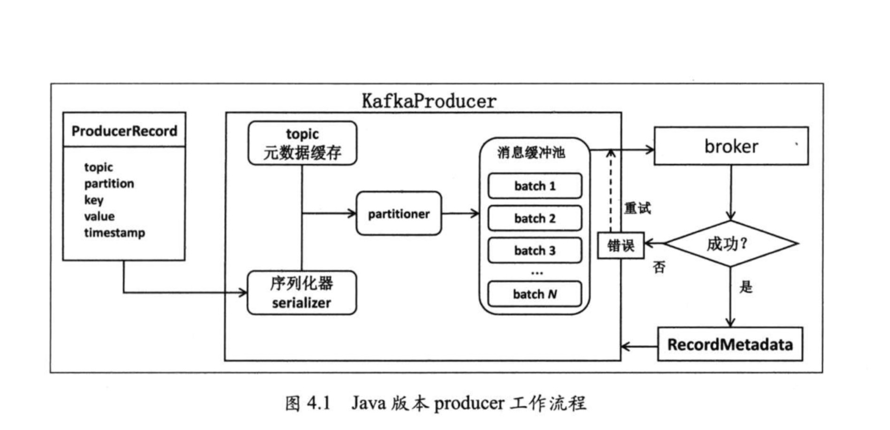
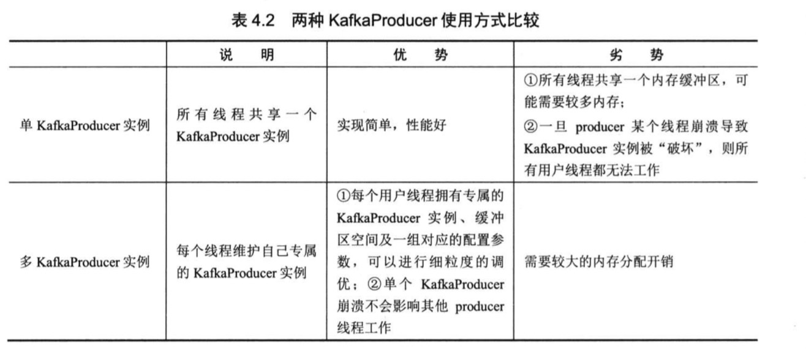

kafka 负责向消息队列 写入消息。
kafka producer 要比 kafka consumer 简单一点，因为它不涉及复杂的组件管理，与其他的 producer 之间没有关联， 因此实现起来也比较简单。
目前， kafka producer 的首要功能就是向某个 topic 中的某个分区发送一条消息。
分区器(partitioner) 的作用就是决定消息要向 topic 的哪个的分区写入数据。
java-kafka-producer工作流程

配置项
Producer 配置参数
常见配置参数
bootstrap.servers
配置连接代理列表，不必包含Kafka集群的所有代理地址，当连接上一个代理后，会从集群元数据信息中获取其他存活的代理信息。但为了保证能够成功连上Kafka集群，在多代理集群的情况下，建议至少配置两个代理。key.serializer
该参数就是为消息的key做序列化用的。这个参数指定的是实现了org.apache.kafka.common.serialization.Serializer接口的全限定名称。Kafka为大部分的初始类型（primitive type）默认提供了现成的序列化器。用户可以自定义序列化器，只要实现Serializer接口即可
即使producer程序在发送消息时不指定key，这个参数也是必须要设置的，否则程序会抛出ConfigException异常，提示“key.serializer”参数无默认值，必须要配置
value.serializer
类似 key.serializer
这两个参数都必须是全限定名，只使用单独的类名是不行的。client_id
客户端名称,用来追查日志的,默认是kafka-pythson-producer-# (#是个唯一编号)acks
acks指定了在给 producer 发送响应前，leader broker必须要确保已成功写入该消息的副本数。当前acks有3个取值：0、1和allacks=0: 设置成0表示producer完全不理睬leader broker端的处理结果。此时，producer发送消息后立即开启下一条消息的发送，根本不等待leader broker端返回结果。由于不接收发送结果，因此在这种情况下producer.send的回调也就完全失去了作用，即用户无法通过回调机制感知任何发送过程中的失败，所以acks=0时producer并不保证消息会被发送成功。但凡是有利有弊，由于不需要等待响应结果，通常这种设置下producer的吞吐量是最高的。
acks=all或者-1: 表示当发送消息时，leader broker不仅会将消息写入本地日志，同时还会等待ISR中所有其他副本都成功写入它们各自的本地日志后，才发送响应结果给producer。显然当设置acks=all时，只要ISR中至少有一个副本是处于“存活”状态的，那么这条消息就肯定不会丢失，因而可以达到很高的消息持久性，但通常这种设置下producer的吞吐量也是最低的。
acks=1: 是0和all折中的方案，也是默认的参数值。producer发送消息后leader broker仅将该消息写入本地日志，然后便发送响应结果给producer，而无须等待ISR中其他副本写入该消息。那么此时只要该leader broker一直存活，Kafka就能保证这条消息不丢失。这实际上是一种折中方案，既可以达到适当的消息持久性，同时也保证了producer端的吞吐量。
| acks | producer吞吐量 | 消息持久性 | 使用场景 |
| ——- | ————– | ———- | ———————————————————————– |
| 0 | 最高 | 最差 | 1.完全不关心消息是否发送成功
2.允许消息丢失（比如统计服务器日志等） |
| 1 | 适中 | 适中 | 一般场景即可 |
| all或-1 | 最差 | 最高 | 不能容忍消息丢失 |buffer.memory
该参数指定了producer端用于缓存消息的缓冲区大小，单位是字节，默认值是33554432，即32MB。由于采用了异步发送消息的设计架构，Java版本producer启动时会首先创建一块内存缓冲区用于保存待发送的消息，然后由另一个专属线程负责从缓冲区中读取消息执行真正的发送。这部分内存空间的大小即是由buffer.memory参数指定的。若producer向缓冲区写消息的速度超过了专属I/O线程发送消息的速度，那么必然造成该缓冲区空间的不断增大。此时producer会停止手头的工作等待I/O线程追上来，若一段时间之后I/O线程还是无法追上producer的进度，那么producer就会抛出异常并期望用户介入进行处理。
虽说producer在工作过程中会用到很多部分的内存，但我们几乎可以认为该参数指定的内存大小就是producer程序使用的内存大小。若producer程序要给很多分区发送消息，那么就需要仔细地设置这个参数以防止过小的内存缓冲区降低了producer程序整体的吞吐量
batch.size
batch.size是producer最重要的参数之一。
producer会将发往同一分区的多条消息封装进一个batch中。当batch满了的时候，producer会发送batch中的所有消息。
不过，producer并不总是等待batch满了才发送消息，很有可能当batch还有很多空闲空间时producer就发送该batch。
通常来说，一个小的batch中包含的消息数很少，因而一次发送请求能够写入的消息数也很少，所以producer的吞吐量会很低；但若一个batch非常之巨大，那么会给内存使用带来极大的压力，因为不管是否能够填满，producer都会为该batch分配固定大小的内存。因此batch.size参数的设置其实是一种时间与空间权衡的体现。retries
重试发送次数,有时候网络出现短暂的问题的时候,会自动重发消息,前面提到了这个值是需要在acks=1或all时候才有效.
如果设置了该参数,但是s etting max_in_flight_requests_per_connection 没有设置为1的话,可能造成消息顺序的改变,因为如果2个 batches 发到同一个 partition, 但是第一个失败重发了,那么就会造成第二个 batches 跑到前面去了.
默认值 0重试可能造成消息的重复发送
比如由于瞬时的网络抖动使得broker端已成功写入消息但没有成功发送响应给producer，因此producer会认为消息发送失败，从而开启重试机制。为了应对这一风险，Kafka要求用户在consumer端必须执行去重处理。另0.11.0.0版本开始支持“精确一次”处理语义。重试可能造成消息乱序
当前 producer 会将多个消息发送请求（默认是5个）缓存再内存中，如果由于某种原因发生了消息发送重试，就可能造成消息流的乱序。为了避免乱序发生，Java版本 producer 提供了max.in.flight.request.per.connection 参数。一旦用户将此参数设置成1，producer将确保某一时刻只能发送一个请求。
compression.type
compression.type参数设置producer端是否压缩消息，默认值是none，即不压缩消息。Kafka的producer端引入压缩后可以显著地降低网络I/O传输开销从而提升整体的吞吐量，但也会增加producer端机器的CPU开销。另外，如果broker端的压缩参数设置的与producer不同，broker端在写入消息时也会额外使用CPU资源对消息进行对应的解压缩-重压缩操作。根据实际使用经验来看， producer 结合
LZ4的性能是最好的inger.ms
linger.ms参数就是控制消息发送延时行为的。该参数默认值是0，表示消息需要被立即发送，无须关心 batch 是否被填满，大多数情况下这是合理的，毕竟我们总是希望消息被尽可能快地发送。不过这样做会拉低 producer 吞吐量，毕竟 producer 发送的每次请求中包含的消息数越多，producer 就越能将发送请求的开销摊薄到更多的消息上，从而提升吞吐量。request.timeout.ms
当producer发送请求给 broker 后，broker 需要在规定的时间范围内将处理结果返还给producer。这段时间便由该参数控制的，默认是30秒。这就是说，如果broker在30秒内都没有给 producer 发送响应，那么 producer就会认为该请求超时了，并在回调函数中显示地抛出 TimeoutException 异常交由用户处理。默认的30秒对于一般的情况而言是足够的，但如果 producer 发送的负载很大，超时的情况就很容易碰到，此时就应该适当调整该参数值。
max.request.size
该参数用于控制 producer 发送请求的大小。实际上该参数控制的是 producer 端能够发送的最大消息的大小。由于请求有一些头部数据结构，因此包含一条消息的请求大小要比消息本身大。不过姑且把它当做请求的最大尺寸是安全的。如果 producer 要发送尺寸很大的消息，那么这个参数就是要被设置的。默认的1048576字节大小了，通常无法满足企业级消息的大小要求。
Producer 分区机制
kafka 提供了分区策略 以及对应的分区器(partiotioner) 供用户使用。随着 kafka 发布的默认的 partitioner 会尽力保证具有相同 key 的所有信息都会发送到相同的分区上。
如果没有指定 key, 则 该 partitioner 会选择 轮询 的方式来确保消息在 topic 的所有分区上均匀分配。
自定义分区机制
java 版本 producer 自带的 partitioner 会根据 murmur2 算法计算消息 key 的 hash 值，然后对总分区数球模得到消息要被发送到的目标分区号。
要完成 自定的分区策略， 需要完成 2 件事
- 实现
org.apache.kafka.clients.producer.Partitioner接口 - 在 KafkaProducer 的 Properties 对象设置 partitioner.class 参数
1 | public interface Partitioner extends Configurable, Closeable { |
这两篇博客讲的挺好的
Kafka分区分配策略（1）——RangeAssignor
Kafka分区分配策略（2）——RoundRobinAssignor和StickyAssignor
Producer 消息序列化
Producer 拦截器
定义消息拦截器 需要实现的接口是 org.apache.kafka.clients.producerProducerInterceptor
Producer 消息压缩
kafka 支持的压缩算法 lz4 >> snappy >> gzip
Producer 消息多线程处理
实际生产环境中， 一个朱用户线程 无法满足所需的吞吐量目标，因此需要构建多个线程同时给 kafka集群发送消息。
- 多线程 单 kafkaPrducer 实例
这种方法 就是在多线程中共享一个 kafkaPrducer实例， 由于 kafkaPrducer 是线程安全的，所以这种方式也是线程安全的 - 多线程 多 kafkaPrducer 实例
在每个Producer 主线程中构建一个 kafkaPrducer实例， 并且保证该实例在主线程中是线程封闭(thread confinement)的。
thread confinement 是保证线程安全的重要手段

对于分区数目较少的， 使用第一种方式较为合适，多个线程共享一个kafkaProducer实例。
如果分区数目超多， 使用第二种方式有较高的可控性